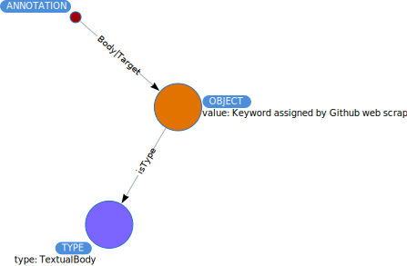

OBJECTs¶
Objects are the powerhouse of Throughput. They are the elements that are linked
by annotations. The main object classes in Throughput are grants, code repositories
and databases. Objects are defined by TYPE classes. A TYPE
is defined either through the types defined in the W3C Annotation documentation, or
by a set of definitions from schema.org.
All objects have a unique ID (imposed by neo4j), and may have a second ID that is defined by the object type. NOTE: The parameter id associated with some OBJECT nodes is not the same as the values obtained using the cypher statement id(node). Using id(node) returns the internal identity value for the node as implemented by neo4j.

An OBJECT in the database may be connected to a TYPE (isType) or an ANNOTATION (Body or Target).
Matching Objects¶
An OBJECT may have one or more properties, not all OBJECTs have the same properties. For example, a TextualBody object will (most likely) not have a doi associated with it. Some common properties of OBJECTs are urls, ids, and name elements. A simple OBJECT match may be:
MATCH (o:OBJECT)
WHERE o.name CONTAINS('Neotoma')
RETURN o
Constraints & Indexes¶
Object ids must be unique & are indexed:
CREATE CONSTRAINT ON (o:OBJECT) ASSERT o.id IS UNIQUE;
CREATE INDEX objName FOR (n:OBJECT) ON (n.name)
Object names are indexed
CREATE INDEX objName FOR (n:OBJECT) ON (n.name)
There is a fulltext index on the name and description:
CALL db.index.fulltext.createNodeIndex("nameAndDesc",
["OBJECT"],
["name", "description"])